The Home Depot processes customer returns across 2,300+ stores. Associates used four separate applications — including green-screen terminals — to disposition each item. I was brought in to design a single, research-grounded replacement.
Home Depot is the largest home improvement retailer in the United States with 2,300 stores, 490,600 employees, and $145.7 billion in net sales in fiscal year 2021. At that scale, every returned item is a financial decision. The Return to Vendor (RTV) process is the operation responsible for recovering the full cost of those returns. When a task stalls due to an error, a missed step, or a system handoff that breaks down, the item does not move. And when items do not move, margin disappears.
When I joined the RTV team, there were five documented pain points that formed the foundation of the design brief. I did not accept these at face value — I used them as hypotheses to investigate through research.
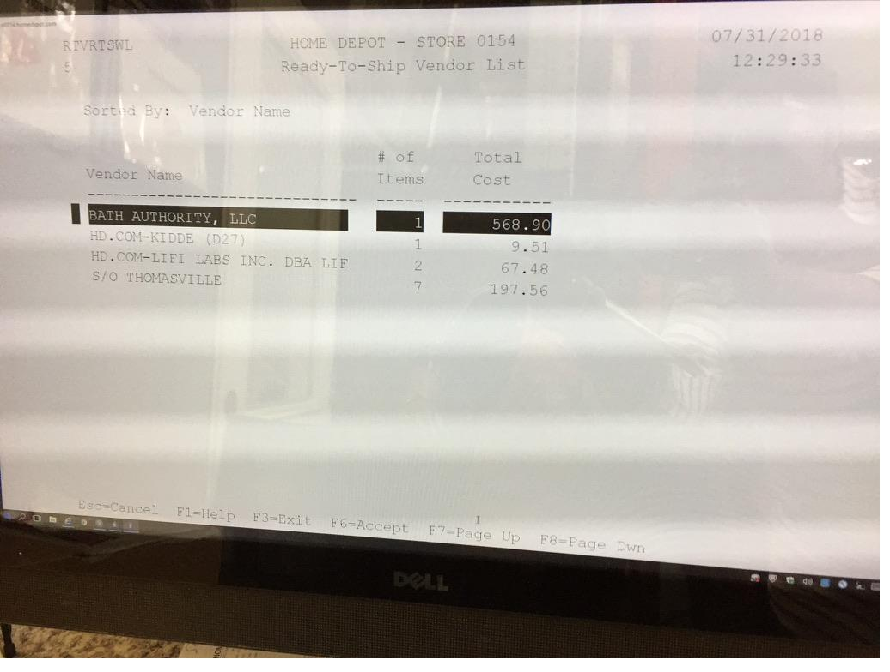
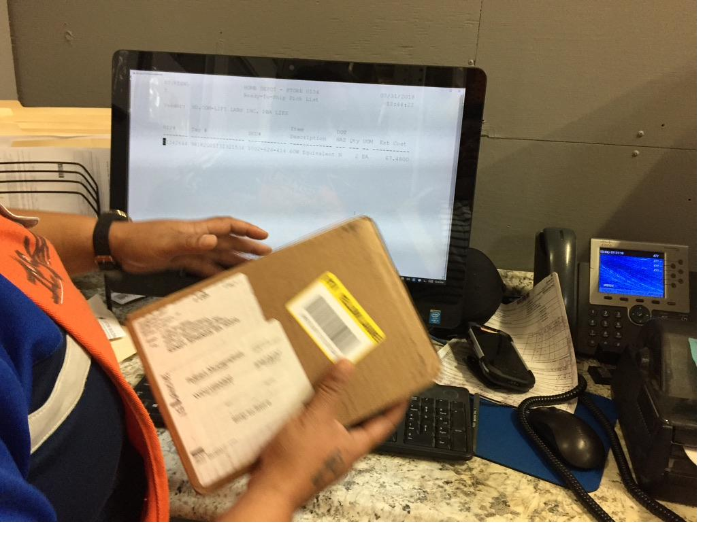
I applied the Double Diamond process from initial research through final usability testing. Every phase produced artifacts that directly shaped the next one.
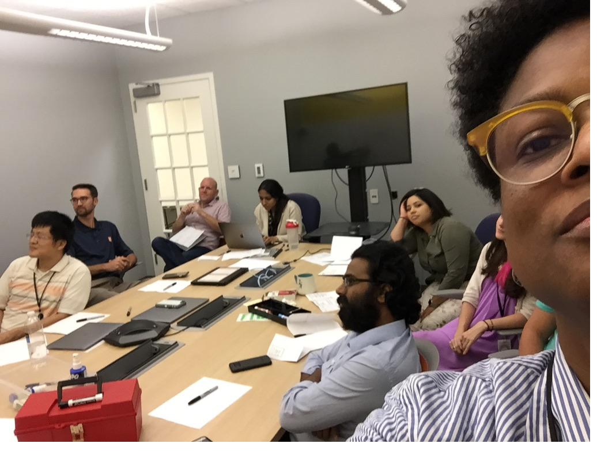
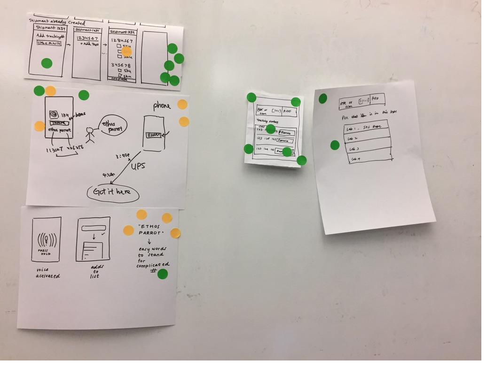
I arranged visits to a Home Depot warehouse in the greater Atlanta area and observed three associate roles as they processed returns in real time: the Customer Service Associate who receives the item, the Runner who moves it to the back, and the Receiving Associate who dispositions it.
I brought a notebook and my iPhone. I used identical questions across all participants. I informed associates that their participation was voluntary and would be anonymized.
I studied archival process documentation and identified a pattern. What had been described as a single "returns process" was actually five distinct phases, each with its own decision logic and error modes.
5-Phase RTV Model
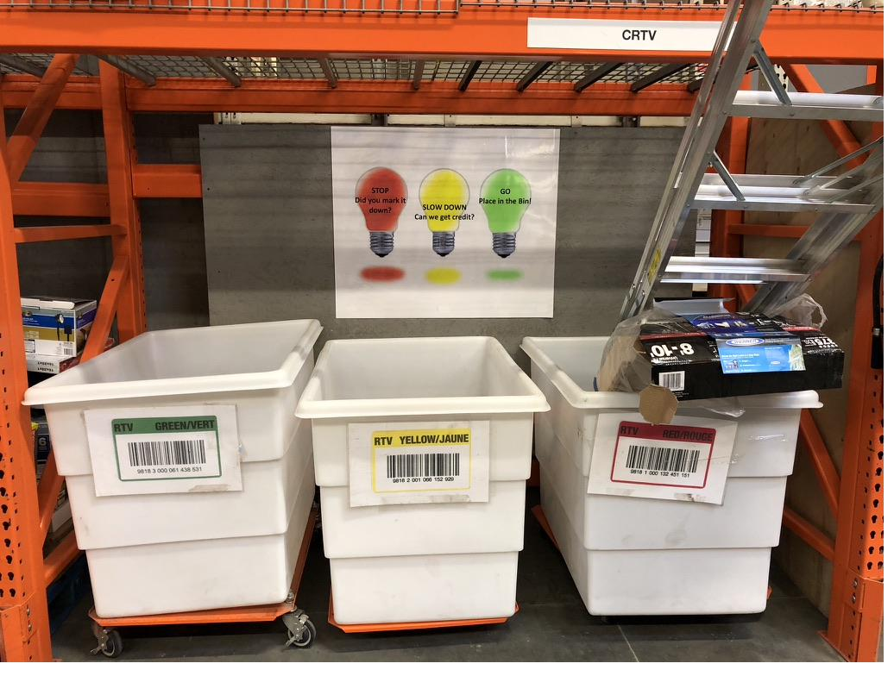
The physical CRTV sorting area: associates used a stop/slow/go system to self-triage returns without digital guidance. This workaround was invisible in the stakeholder brief.
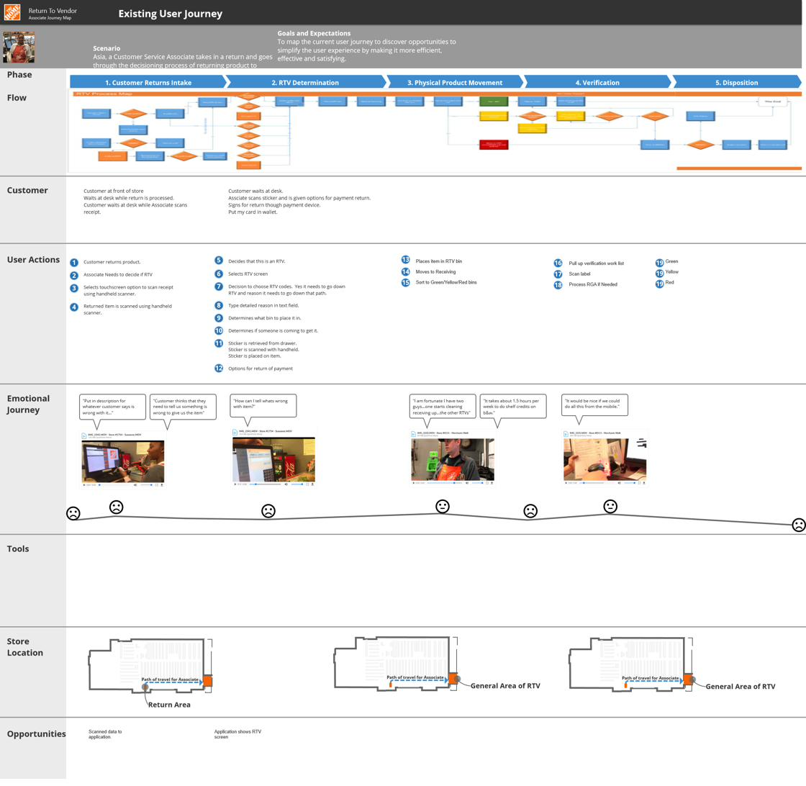
Existing user journey map: 5 phases, 19 discrete user actions, documented during artifact analysis. The emotional journey flatlined across every phase.
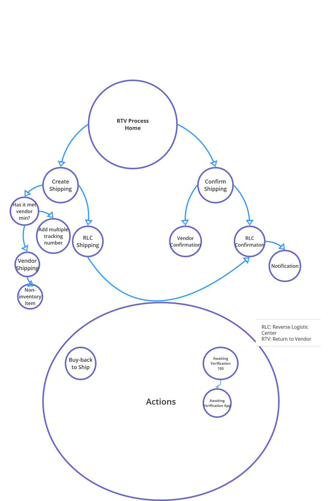
Concept mapping: synthesizing the relationships between Create Shipping, Confirm Shipping, and the Actions layer to inform the new information architecture.
I built personas from interview data — not from assumptions. This project required three because the return process crossed three roles, and the design had to serve all of them.
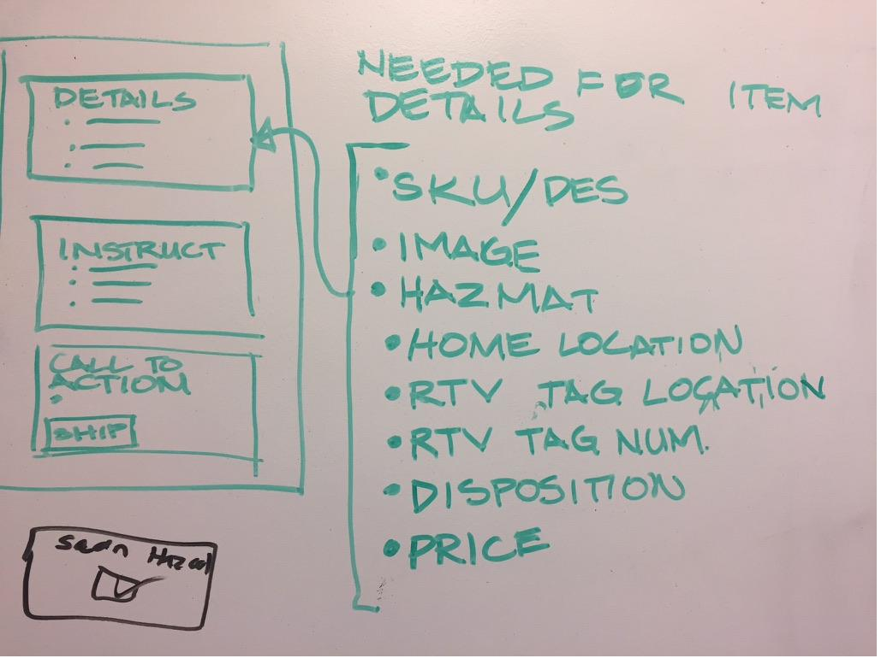
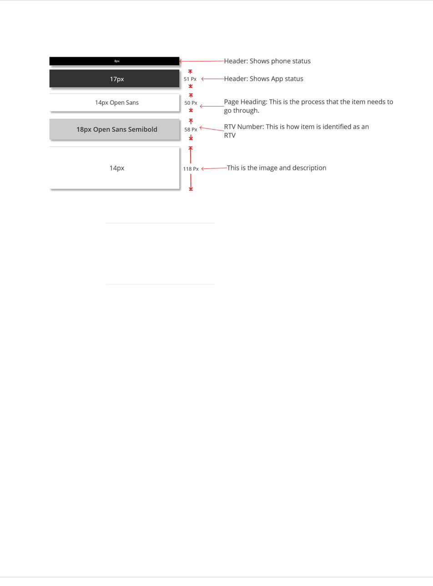
Associates navigated between a COBOL green-screen terminal and multiple desktop applications to process a single return. The design goal was to eliminate that context-switching entirely — scan the item once, let the system route it.
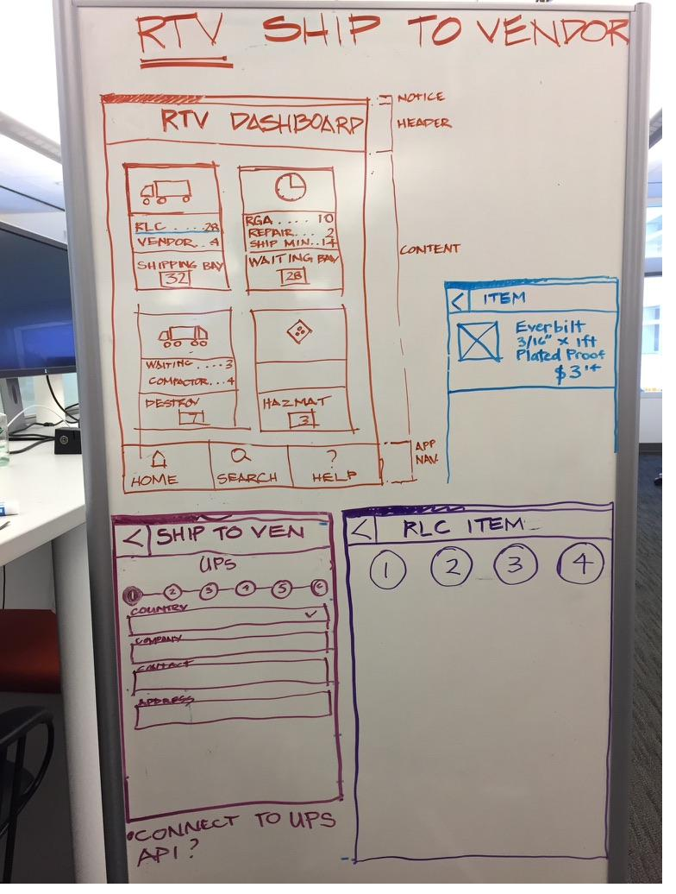
Early whiteboard sketch of the RTV dashboard — home, search, and help navigation established before any digital mockup. Counts and categories informed directly by the personas.
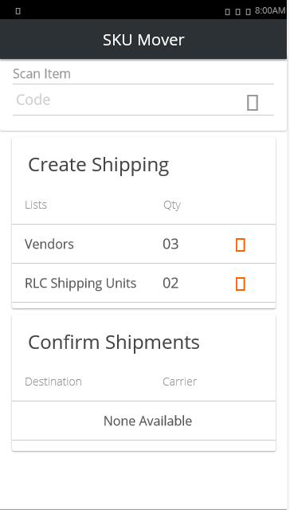
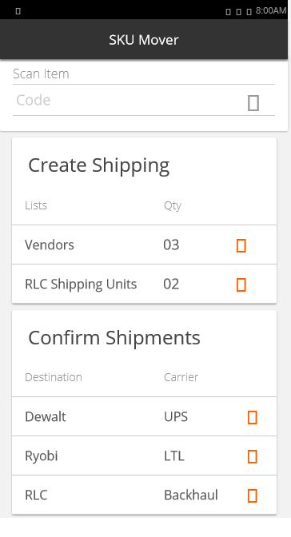
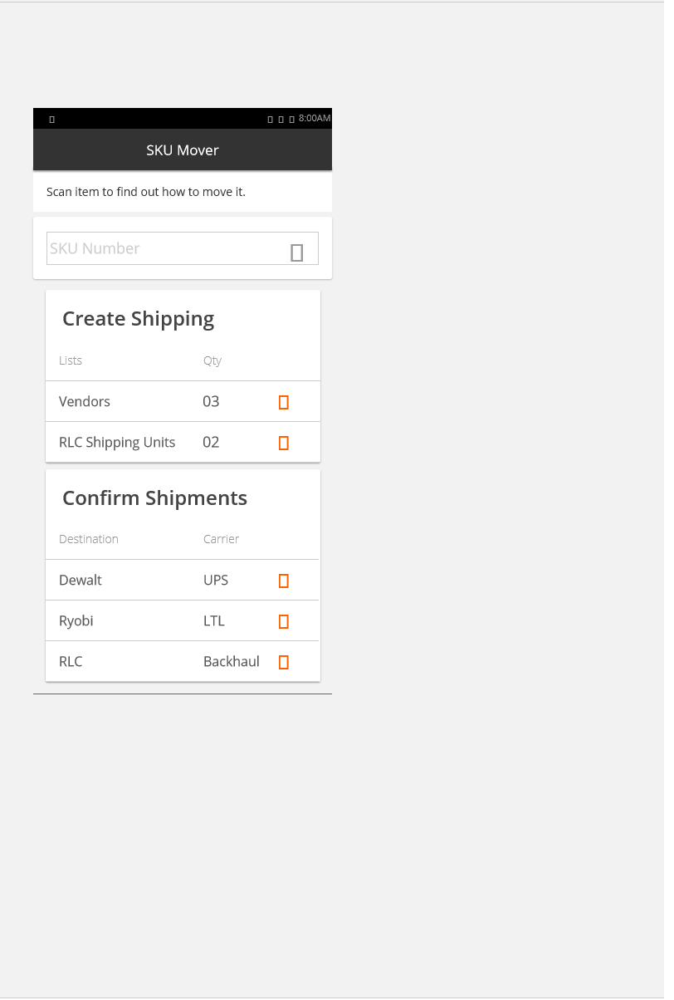
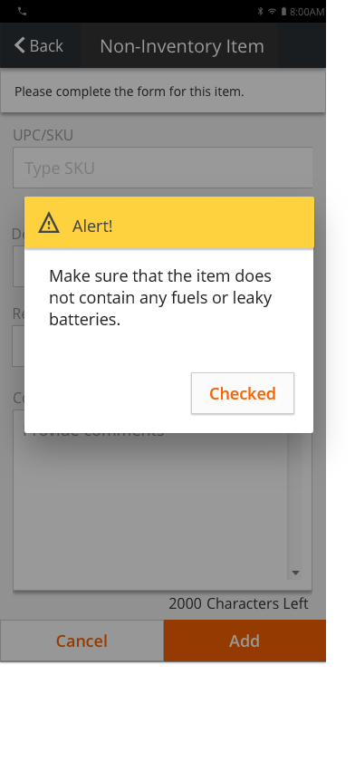
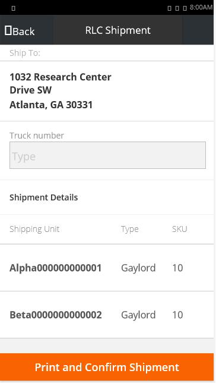
I did not test at a desk. I wrote a usability script, made store appointments, and tested the Axure prototype on my personal phone — held in the associate's hand, the way it would actually be used. I also ran remote sessions via Zoom for stores outside Atlanta.
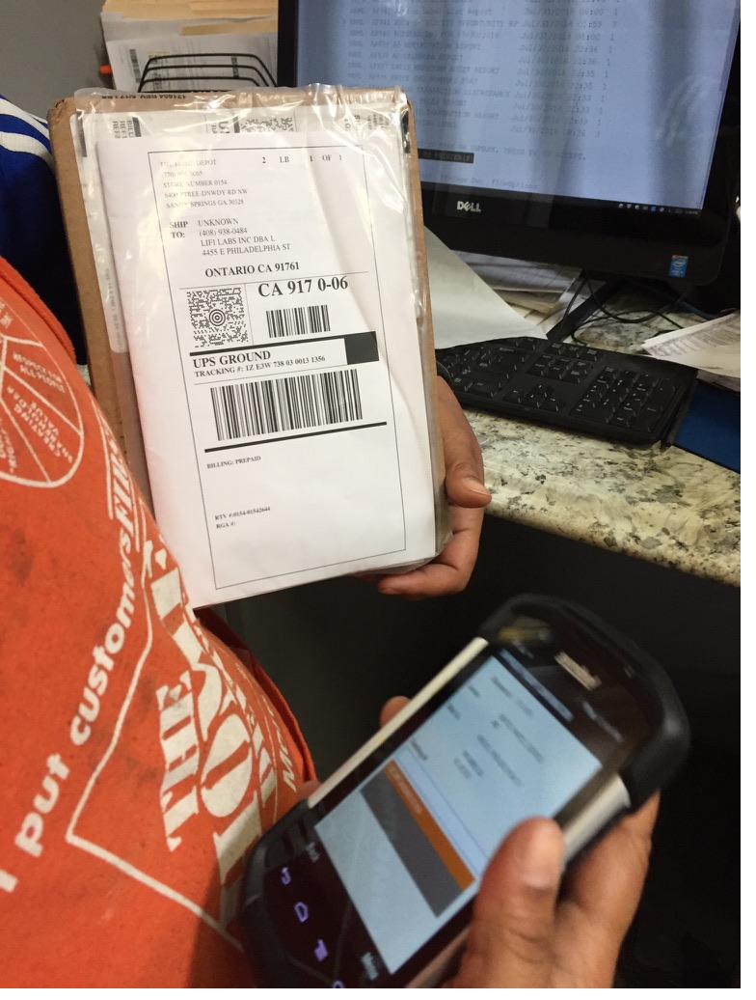
The application in use: an associate scans a return package using the redesigned mobile app. The legacy system is still visible in the background — the before and after in a single frame.
The application was built and implemented on the First Phone across Home Depot stores. All five phases of the redesigned process were handed to developers via agile user stories. Associates reported processing returns more efficiently, and the time-on-task reduction was validated.
Reduction in time-on-task for RTV processing
Legacy applications retired and replaced by one
Stores operating the new application nationwide